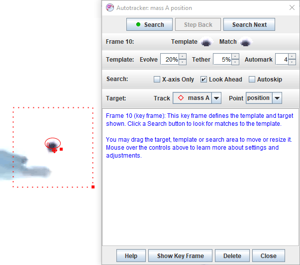
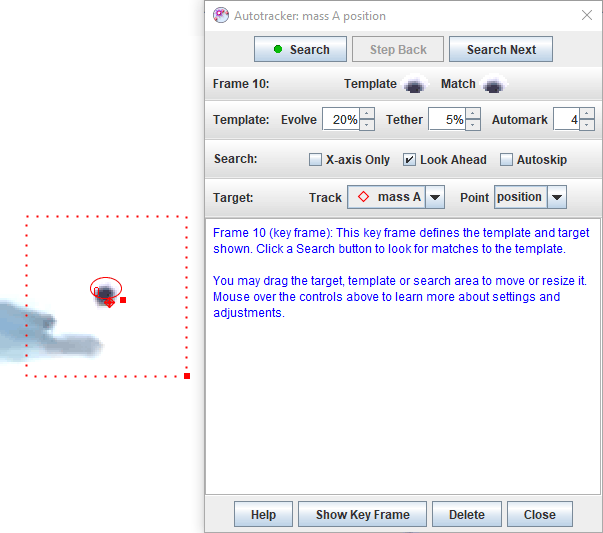
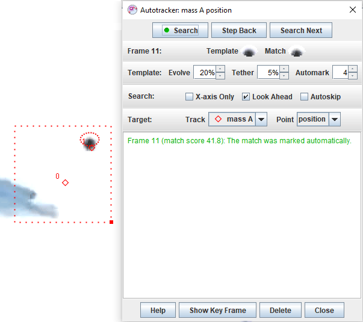
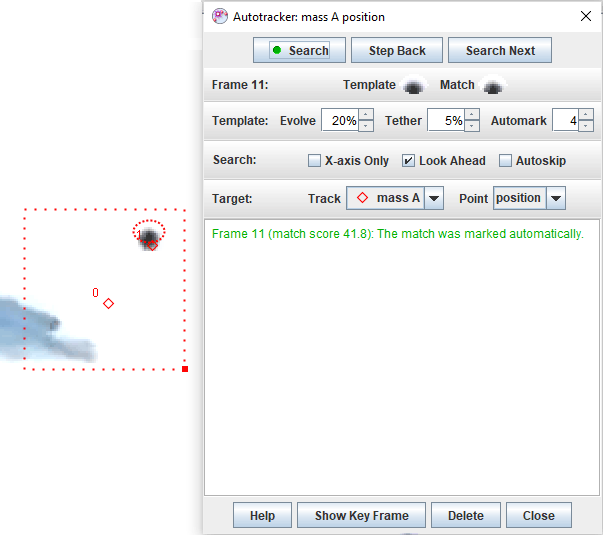

When a video feature of interest has a consistent shape, size, color and orientation in all video frames, it can be tracked automatically using autotracker. This eliminates the need to mark each frame manually with the mouse, thus speeding up the tracking process and producing more consistent data.
Tip: an excellent way to obtain videos suitable for autotracking is to stick colored circular markers on the objects of interest (a white ring around a colored center is even better). Multiple objects can be autotracked if a different color is used for each.
Click the autotracker button  on the toolbar to show or hide autotracker.
on the toolbar to show or hide autotracker.
Autotracker works by creating one or more template images of a feature of interest and then searching each frame for the best match to that template. The best match is the one with the highest match score, a number that is inversely proportional to the sum of the squares of the RGB differences between the template and match pixels. Once the best match is found, it is compared with nearby match scores to determine an interpolated sub-pixel best match position.
By default, the template evolves to adapt to shape and color changes over time. Higher evolution rates track more rapid changes, but may result in template "drift" over many frames.
A target defines the position at which points are marked relative to the template when matches are found. The target may be offset from the template. The specific track and point marked at the target position must be selected prior to autotracking.
A video frame in which a template and its associated target are defined is called a key frame. Autotracking requires at least one key frame, but additional key frames may be defined to track sudden or extreme changes in the object, background or illumination.
When the best match score is high (a good match), a point is automatically marked at the target position. But when the match score is only moderate (a possible match) then the user is asked to review the match and accept or override it. The automark level for automatic marking may be set by the user.
Autotracker limits its search for a match in each frame to a user-defined rectangular search area. When at least two steps have been marked, the velocity and acceleration of the point mass is used by default to predict the location of future matches and the search area is moved accordingly. However, you can turn off this look ahead feature and/or reposition or resize the search area at any time.
You can also limit the search to the x-axis only for 1D autotracking. Set the axis origin and tilt angle to search along any desired line.
After autotracker has completed the marking process, you may modify the steps at will. In other words, autotracker helps you mark the steps but does not limit your control over them.
Before using autotracker, scan through the video and verify that the feature of interest is visible and reasonably consistent (shape, size, color and orientation) in all frames. If not, adjust the video clip start frame, end frame and/or step size until this condition is met. Then reset the video to the start frame.
If planning to autotrack a very long video, it is useful to turn off auto-refresh in order to speed up the marking process. To turn off auto-refresh, click the Refresh button on the toolbar and uncheck the Auto-refresh item in the popup menu. When done marking, turn auto-refresh back on or refresh the data manually by choosing the Refresh item in the popup menu.

Figure 1 shows autotracker after creating a key frame. The template is outlined on the video and shown at 2x magnification in autotracker along with the (perfect) match found. The target point is indicated by a bold cross on the video and the search area is outlined with a dashed line.

 

Controls are organized into the following categories. To learn more about a specific control or setting, simply move the mouse over it.
Search buttons:
Template: The template is the image to be matched.
Search: The search area defines the region that is searched for the best match.
Target: The target defines both the track and point to be marked and the position of the mark relative to the template.
Other buttons:
After searching a frame, autotracker will display one of the following search results and, in some cases, present options for solving problems.

 
